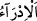
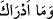
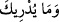

indiği de söylenmiştir. Yahut bu mîzan ve terazinin indirilmiş olması, mîzanla emrin
inmesinden ve alış verişte mîzan kullanımından ibaret olan mecâzi bir durumdur.
Aynü’l-me‘ânî’de belirtildiğine göre; mîzandan maksad kâinatın en yücesi olan Hz.
Muhammed (s.a.)’dir.
et-Te’vilâtü’n-Necmiyye’de şöyle denmektedir: Allah Teâlâ burada kalplere yazdığı
îman kitabına ve kendisiyle hukuk düzeninin; hayır, şer, güzel, çirkin her şeyin tartıldığı
akıl mîzanına işâret etmektedir. Zîrâ bunlar yani îman ve akıl birbirinden ayrılmayan iki
dostturlar. Her zaman biri diğeri için elzemdir. Allah Teâlâ bunlara basîret adı vermiş
ve şöyle buyurmuştur. “Doğrusu size Rabbinizden basîretler geldi. Artık kim
(gerçeği) görürse faydası kendisine, kimde (gerçeğe karşı) kör olursa zararı
kendisinedir” (el-En’âm, 6/104). İman ve akıldan birinin yokluğu diğerinin de yokluğu
demektir. Allah Teâlâ şöyle buyuruyor. “Onlar sağır dilsiz ve kördürler onun için
düşünmezler” (el-Bakara, 2/171). İşte Allah îmânı olmayanın akıl ve basiretinin de
olmadığını ifâde etmektedir.
“Ne biliyorsun belki de” hakkı konuşan kitabın geleceğini haber verdiği “kıyâmet
saati”nin gelmesi “yakındır?”/İdrâ, i’lam yani bildirmek mânâsındadır. Hiç kimsenin dirâyet ve ilminin
ulaşamayacağı azamet, şiddet, gizem ve kapalılıkta olan kıyâmet hâlini sana ne
bildirecek? Bu ancak bizden bir vahiyle bilinir.
Râgıb şöyle demiştir. Kur’an’ı Kerim’de her nerede fiil-i mâzî kalıbıyla “ /ve
mâ edràke” şeklinde gelmişse ardından hemen beyan ve îzâhı da gelmiştir. “Onun ne
olduğunu sen nereden bileceksin? O, kızgın bir ateştir” (el-Kària, 101/10-11)
âyetinde olduğu gibi. Her nerede muzâri kalıbıyla “ /ve mâ yüdrîke” şeklinde
gelirse bunun ardından bir açıklama gelmemiştir. Buradaki “Ne biliyorsun belki de o
saat yakındır?” ifâdesinde olduğu gibi.
Zâhir olan burada “yakındır” anlamındaki “karîb” kelimesinin, müennes zamire isnad
olduğu için “karîbetün” şeklinde müennes olarak gelmesidir. Ancak burada sıfat
mevsufu değil onunla alâkalı başka bir husûsu beyan sadedinde vâki olduğundan
müzekker olarak gelmiştir. Yahut burada yakındır demek yakınlık sâhibidir mânâsında
olup görünüşte ism-i fâil sûretinde olsa da burada bir nisbet mânâsı vardır. “Lâbin” ve
“tâmir” kelimeleri de böyledir. Süt sahibi ve hurma sahibi demektir. Yani “lebenî” ve
“temrî” demek olup süte ve hurmaya mensup demektir. Fiilde olduğu gibi burada bir
inşâ ve îcâd mânâsı yoktur. İşte hakiki bir fiil mânâsında olmayınca müenneslik tâ’sı da
bitişmemiş oldu. Yahut burada bir şeye kendinde meydana gelen iş ile isim vermek
kabilinden kıyâmet mânâsında olan saat kelimesi “ba’s” yani diriliş mânâsındadır.
Zemahşeri şöyle demiştir: Bu ifâde burada muzaf takdiriyle olup “belki de kıyâmetin
gelmesi yakındır” şeklinde yorumlanmıştır. Mânâ şudur: “Kıyâmet artık gelme
cenâhındadır. Ey Peygamber! Sen kitaba uy ve onunla amel et. Amellerin tartılıp
karşılıklarının tastamam verileceği kıyâmet günü ansızın gelmeden adâlet yapmaya